Who are Street Waffles?
As one of the many Fast Food restaurants in Sofia,
Street Waffles have their own unique style and
taste,
quickly making them one of the best known
food spots in the capital.
The delicious combinations
they offer hardly resistible to anyone!
So, we suggest you to postpone your
diet for when you come back home!
Join the fun at
Street Waffles Community
Take a picture and post it on instagram with the #streetwaffles hashtag
and enjoy that sugar deliciousness!
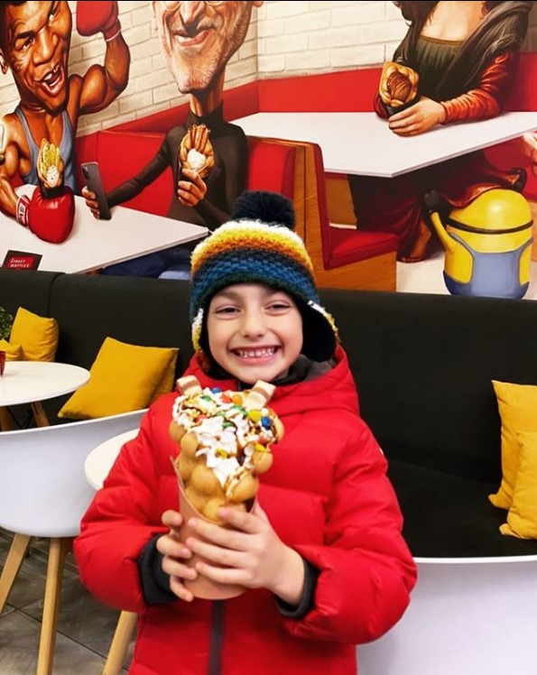
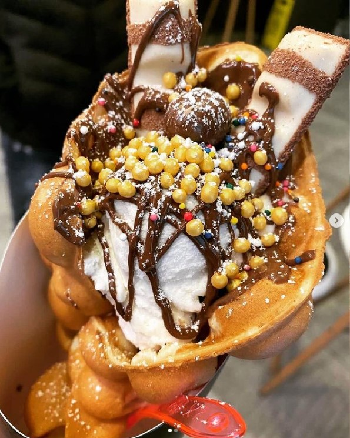
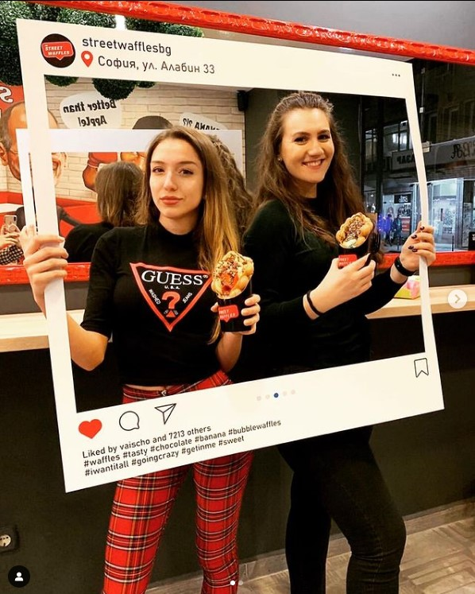
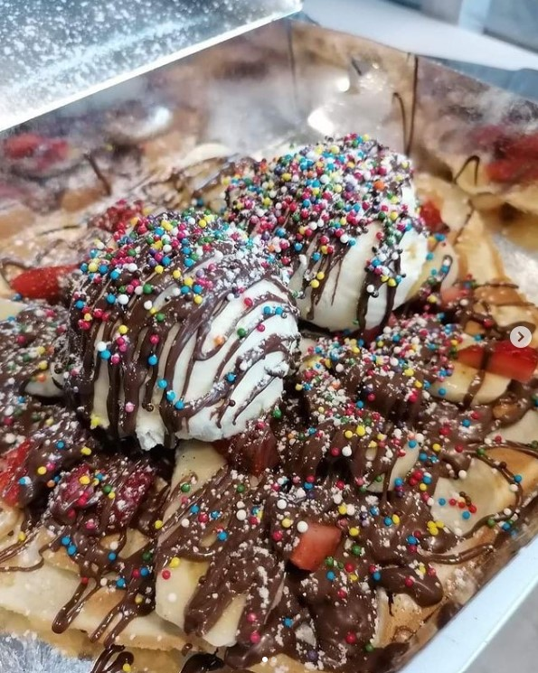
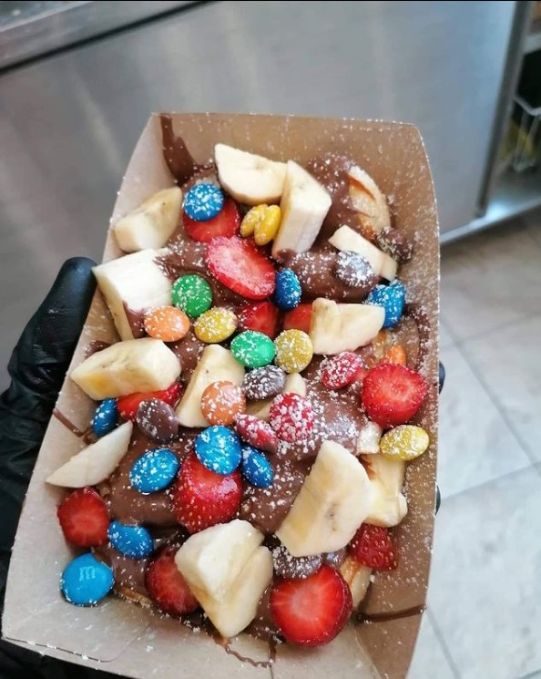
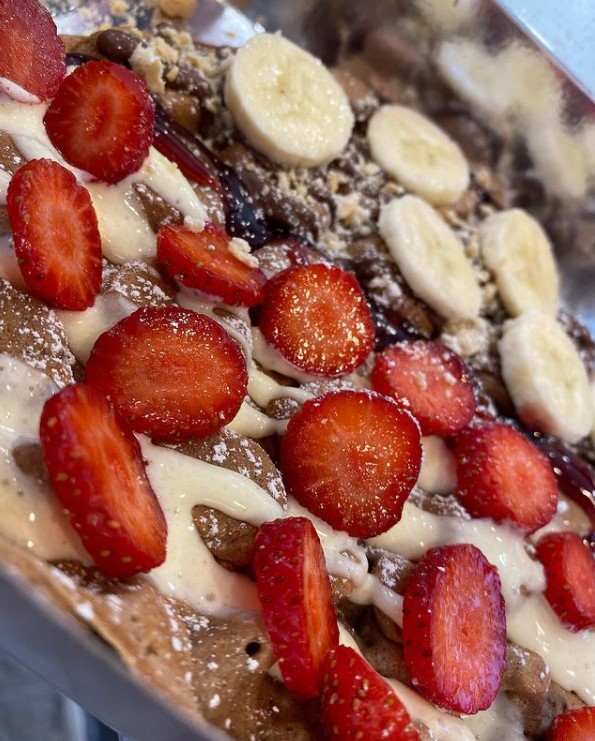
 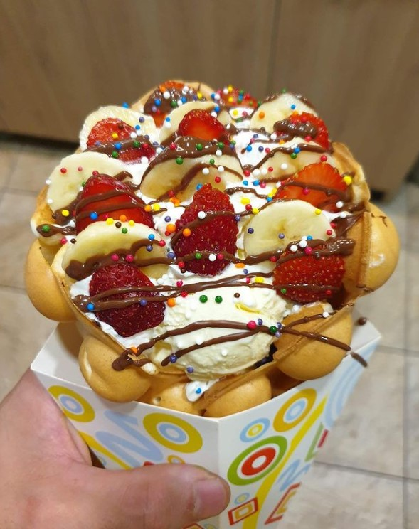
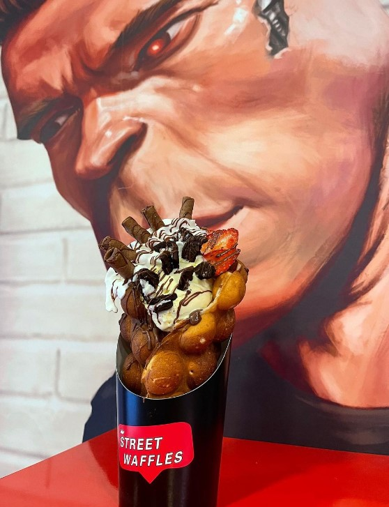
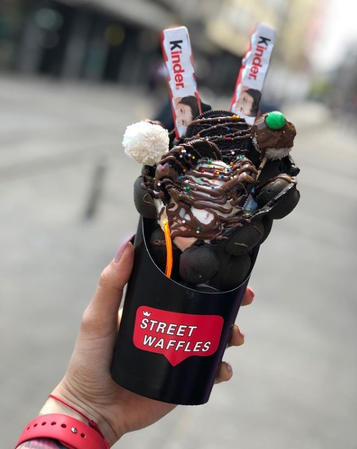
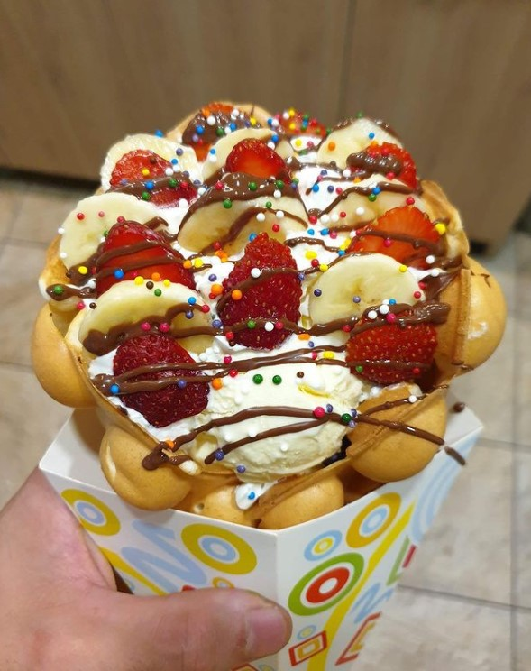
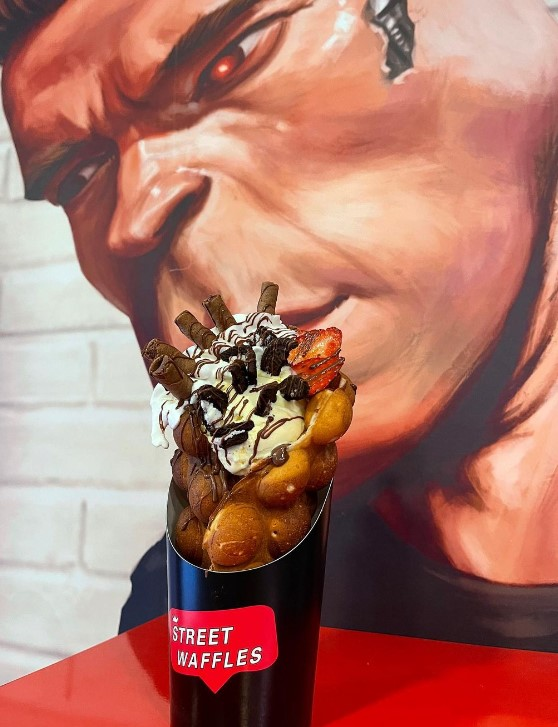
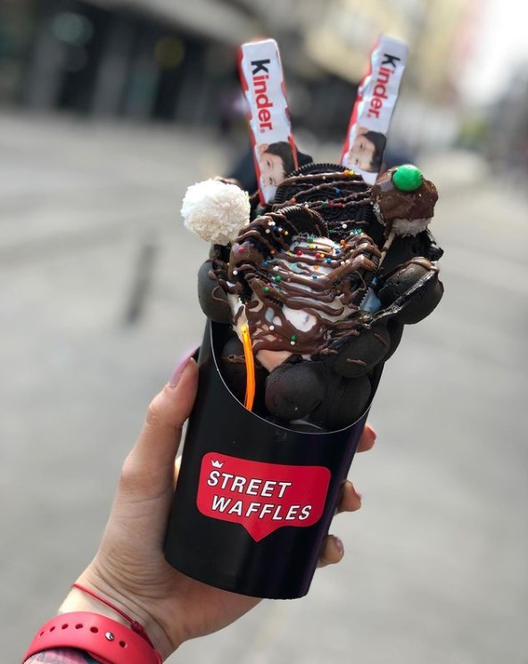
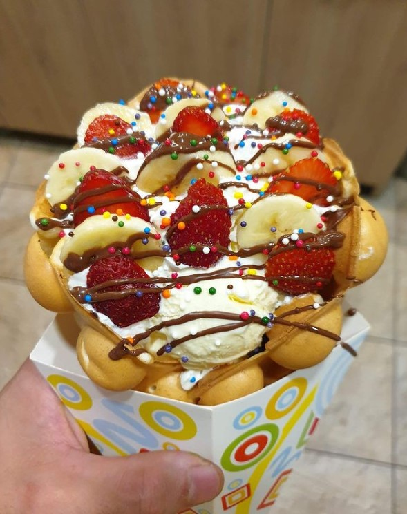
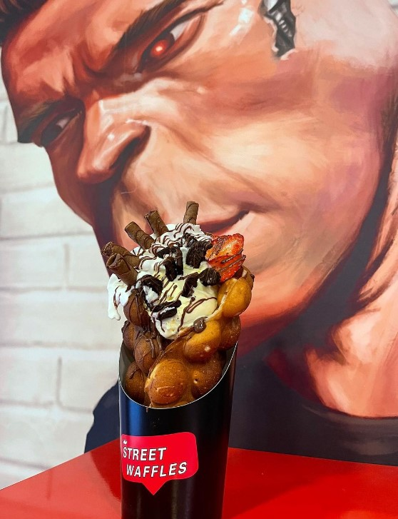
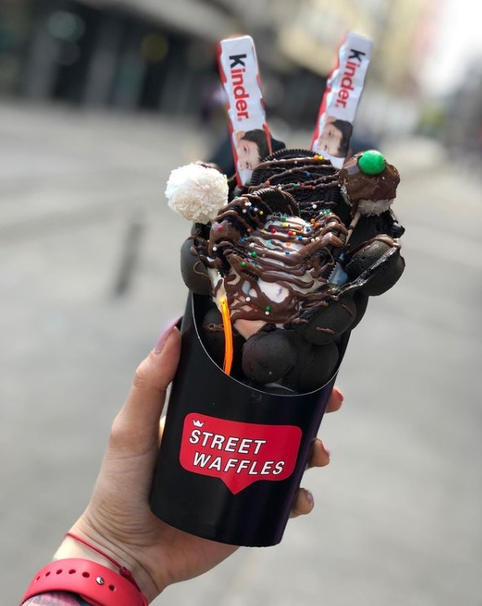
Where to be found?
Street Waffles are located at the heart
of the city center - just at the beginning
at Vitosha Boulevard.
"Alabin" 33 street, 1000 Sofia Bulgaria